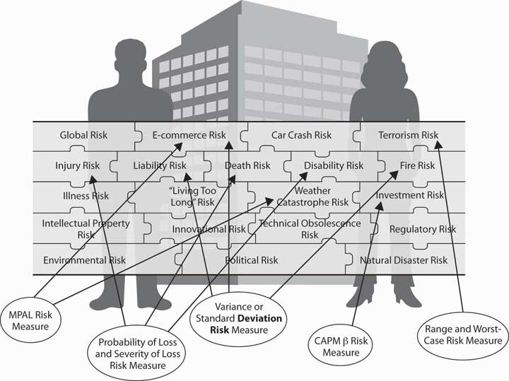

In Chapter 1 "The Nature of Risk: Losses and Opportunities", we discussed how risk arises as a consequence of uncertainty. Recall also that risk is not the state of uncertainty itself. Risk and uncertainty are connected and yet are distinct concepts.
In this chapter, we will discuss the ways in which we measure risk and uncertainty. If we wish to understand and use the concepts of risk and uncertainty, we need to be able to measure these concepts’ outcomes. Psychological and economic research shows that emotions such as fear, dread, ambiguity avoidance, and feelings of emotional loss represent valid risks. Such feelings are thus relevant to decision making under uncertainty. Our focus here, however, will draw more on financial metrics rather than emotional or psychological measures of risk perception. In this chapter, we thus discuss measurable and quantifiable outcomes and how we can measure risk and uncertainty using numerical methods.
A “metric” in this context is a system of related measures that helps us quantify characteristics or qualities. Any individual or enterprise needs to be able to quantify risk before they can decide whether or not a particular risk is critical enough to commit resources to manage. If such resources have been committed, then we need measurements to see whether the risk management process or procedure has reduced risk. And all forms of enterprises, for financial profit or for social profit, must strive to reduce risk. Without risk metrics, enterprises cannot tell whether or not they have reached risk management objectives. Enterprises including businesses hold risk management to be as important as any other objective, including profitability. Without risk metrics to measure success, failure, or incremental improvement, we cannot judge progress in the control of risk.
Risk management provides a framework for assessing opportunities for profit, as well as for gauging threats of loss. Without measuring risk, we cannot ascertain what action of the available alternatives the enterprise should take to optimize the risk-reward tradeoff. The risk-reward tradeoff is essentially a cost-benefit analysis taking uncertainty into account. In (economic) marginal analysis terms, we want to know how many additional units of risk we need to take on in order to get an additional unit of reward or profit. A firm, for example, wants to know how much capital it needs to keep from going insolvent if a bad risk is realized.This is particularly true in firms like insurance companies and banks where the business opportunity they pursue is mainly based on taking calculated and judgment-based risks. Indeed, if they cannot measure risk, enterprises are stuck in the ancient world of being helpless to act in the face of uncertainty. Risk metrics allow us to measure risk, giving us an ability to control risk and simultaneously exploit opportunities as they arise. No one profits from establishing the existence of an uncertain state of nature. Instead, managers must measure and assess their enterprise’s degree of vulnerability (risk) and sensitivity to the various potential states of nature. After reading this chapter, you should be able to define several different risk metrics and be able to discuss when each metric is appropriate for a given situation.
We will discuss several risk measures here, each of which comes about from the progression of mathematical approaches to describing and evaluating risk. We emphasize from the start, however, that measuring risk using these risk metrics is only one step as we assess any opportunity-risk issue. Risk metrics cannot stand alone. We must also evaluate how appropriate each underlying model might be for the occasion. Further, we need to evaluate each question in terms of the risk level that each entity is willing to assume for the gain each hopes to receive. Firms must understand the assumptions behind worst-case or ruin scenarios, since most firms do not want to take on risks that “bet the house.” To this end, knowing the severity of losses that might be expected in the future (severity is the dollar value per claim) using forecasting models represents one aspect of quantifying risk. However, financial decision making requires that we evaluate severity levels based upon what an individual or a firm can comfortably endure (risk appetite). Further, we must evaluate the frequency with which a particular outcome will occur. As with the common English language usage of the term, frequency is the number of times the event is expected to occur in a specified period of time. The 2008 financial crisis provides an example: Poor risk management of the financial models used for creating mortgage-backed securities and credit default derivatives contributed to a worldwide crisis. The assessment of loss frequency, particularly managers’ assessment of the severity of losses, was grossly underestimated. We discuss risk assessment using risk metrics in the pages that follow.
As we noted in Chapter 1 "The Nature of Risk: Losses and Opportunities", risk is a concept encompassing perils, hazards, exposures, and perception (with a strong emphasis on perception). It should come as no surprise that the metrics for measuring risk are also quite varied. The aspect of risk being considered in a particular situation dictates the risk measure used. If we are interested in default risk (the risk that a contracting party will be unable to live up to the terms of some financial contract, usually due to total ruin or bankruptcy), then one risk measure might be employed. If, on the other hand, we are interested in expected fluctuations of retained earnings for paying future losses, then we would likely use another risk measure. If we wish to know how much risk is generated by a risky undertaking that cannot be diversified away in the marketplace, then we would use yet another risk measure. Each risk measure has its place and appropriate application. One part of the art of risk management is to pick the appropriate risk measure for each situation.
In this chapter, we will cover the following:
The first step in developing any framework for the measuring risk quantitatively involves creating a framework for addressing and studying uncertainty itself. Such a framework lies within the realm of probability. Since risk arises from uncertainty, measures of risk must also take uncertainty into account. The process of quantifying uncertainty, also known as probability theory, actually proved to be surprisingly difficult and took millennia to develop. Progress on this front required that we develop two fundamental ideas. The first is a way to quantify uncertainty (probability) of potential states of the world. Second, we had to develop the notion that the outcomes of interest to human events, the risks, were subject to some kind of regularity that we could predict and that would remain stable over time. Developing and accepting these two notions represented path-breaking, seminal changes from previous mindsets. Until research teams made and accepted these steps, any firm, scientific foundation for developing probability and risk was impossible.
Solving risk problems requires that we compile a puzzle of the many personal and business risks. First, we need to obtain quantitative measures of each risk. Again, as in Chapter 1 "The Nature of Risk: Losses and Opportunities", we repeat the Link puzzle in Figure 2.1 "Links between Each Holistic Risk Puzzle Piece and Its Computational Measures". The point illustrated in Figure 2.1 "Links between Each Holistic Risk Puzzle Piece and Its Computational Measures" is that we face many varied risk exposures, appropriate risk measures, and statistical techniques that we apply for different risks. However, most risks are interconnected. When taken together, they provide a holistic risk measure for the firm or a family. For some risks, measures are not sophisticated and easy to achieve, such as the risk of potential fires in a region. Sometimes trying to predict potential risks is much more complex, such as predicting one-hundred-year floods in various regions. For each type of peril and hazard, we may well have different techniques to measure the risks. Our need to realize that catastrophes can happen and our need to account for them are of paramount importance. The 2008–2009 financial crisis may well have occurred in part because the risk measures in use failed to account for the systemic collapses of the financial institutions. Mostly, institutions toppled because of a result of the mortgage-backed securities and the real estate markets. As we explore risk computations and measures throughout this chapter, you will learn terminology and understand how we use such measures. You will thus embark on a journey into the world of risk management. Some measures may seem simplistic. Other measures will show you how to use complex models that use the most sophisticated state-of-the-art mathematical and statistical technology. You’ll notice also that many computations would be impossible without the advent of powerful computers and computation memory. Now, on to the journey.
Figure 2.1 Links between Each Holistic Risk Puzzle Piece and Its Computational Measures
